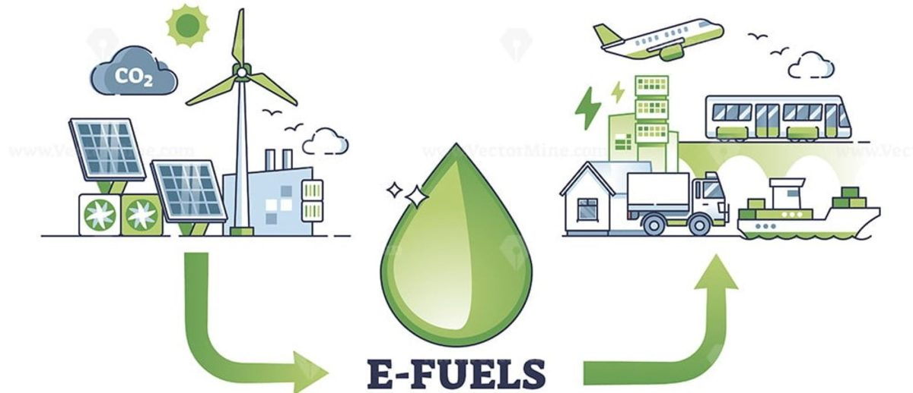

Circular carbon e-fuels connect biomass, captured CO₂, and low-carbon hydrogen into sustainable liquid fuel pathways.
Clean fuels are often discussed as technologies, but they are also questions of systems thinking. Where does the carbon come from? How is the hydrogen produced? What is the energy source? What happens to agricultural residues? What are the life-cycle emissions? And can the pathway be technically feasible, environmentally meaningful, and economically transparent?
This blog is a space where I reflect on these questions through the lens of my research in circular carbon e-fuels, biomass valorization, process modelling, life cycle assessment, techno-economic analysis, and clean combustion.
During my doctoral work, I spent a lot of time thinking about how we evaluate future fuels. In clean energy research, it is easy to focus on one number: fuel yield, conversion efficiency, cost, or greenhouse gas emissions. But real fuel systems are more complicated than that.
A pathway that looks promising from a process perspective may not perform well environmentally. A fuel with low emissions may still be economically difficult to scale. A technically elegant process may depend on unrealistic assumptions about hydrogen, electricity, feedstock availability, or regional infrastructure.
This blog is my attempt to unpack those connections in a more accessible way.
I will use this space to write about clean fuels, circular carbon systems, biomass-to-methanol pathways, CO₂ utilization, life cycle assessment, techno-economic analysis, combustion, research methods, conference experiences, and the broader journey of building a research career in sustainable energy.
Circular carbon e-fuels are fuels designed around the idea of reusing carbon rather than continuously extracting new fossil carbon from the ground.
In a circular carbon pathway, carbon can come from biomass, agricultural residues, fermentation CO₂, industrial CO₂ streams, or other captured carbon sources. When combined with low-carbon hydrogen, this carbon can be converted into liquid fuels such as methanol, e-methanol, ethanol-derived fuels, or other CO₂-to-X products.
In simple terms, the concept is:
Biomass / Residues / Captured CO₂
+
Low-carbon Hydrogen
↓
Circular Carbon Fuels
For my own research, this idea has been especially important in biomass-derived e-methanol systems. These pathways can connect ethanol fermentation, residue gasification, CO₂ capture, hydrogen-assisted methanol synthesis, and downstream fuel assessment into one integrated framework.
Electrification is essential, but not every transport sector can be easily electrified in the same way.
Some applications need high energy density, rapid refuelling, long-distance operation, compatibility with existing engines, or liquid fuel infrastructure. Heavy-duty transport, marine engines, aviation, off-road machinery, and some regional mobility systems may continue to require liquid fuels for longer than light-duty passenger vehicles.
This is where sustainable liquid fuels become important.
The question is not whether e-fuels should replace every other option. They should not. The better question is: where can circular carbon fuels provide the greatest value, and under what technical, environmental, and economic conditions do they make sense?
For any carbon-based fuel, the most important question is simple:
Where does the carbon come from?
If the carbon comes from fossil sources, the fuel may continue to add new carbon to the atmosphere. But if the carbon is biogenic, recycled, or captured from a process stream that would otherwise be released, the pathway may offer a better carbon utilization strategy.
In biomass-to-e-fuel systems, carbon may appear in several forms:
A strong circular fuel pathway should try to use as much of this carbon as possible while minimizing unnecessary energy use, emissions, and cost.
A fuel pathway cannot be judged only by how much fuel it produces.
In my work, I am interested in connecting four layers of assessment:
Process modelling helps answer questions such as:
Tools such as Aspen Plus are useful for building these technical pathways and generating foreground inventory data.
Life cycle assessment helps evaluate the environmental burdens of the fuel pathway. This includes emissions from feedstock production, transport, processing, hydrogen production, electricity use, CO₂ capture, and other upstream or downstream activities.
For clean fuels, LCA is essential because the fuel may appear clean at the point of use, but still carry significant upstream impacts.
Techno-economic analysis asks whether the pathway can become commercially meaningful. It helps identify cost drivers such as hydrogen price, electricity cost, capital cost, feedstock price, catalyst life, conversion efficiency, and plant scale.
A pathway that is environmentally promising but economically unrealistic may need redesign, policy support, or a different deployment context.
Finally, fuels must also be assessed in terms of how they perform in real engines or conversion systems. Combustion behaviour, efficiency, emissions, knock resistance, and blend compatibility all matter.
This is why I see clean fuels as a systems problem — not just a chemistry problem, not just an engine problem, and not just an LCA problem.
This blog will include a mix of research reflections, technical explainers, conference notes, and personal observations from my work in clean fuels and sustainability assessment.
Some topics I plan to write about include:
I also want this blog to be readable for people outside my immediate research niche. The goal is to explain technical ideas without stripping away their complexity.
Circular carbon e-fuels are not a silver bullet. No single technology is.
But they are an important part of the broader conversation on how we can use carbon more intelligently, design fuel systems more responsibly, and evaluate emerging technologies with a clearer understanding of their trade-offs.
For me, the most interesting work happens at the intersection of process design, sustainability assessment, economic feasibility, and real-world fuel performance. That is where this blog begins.